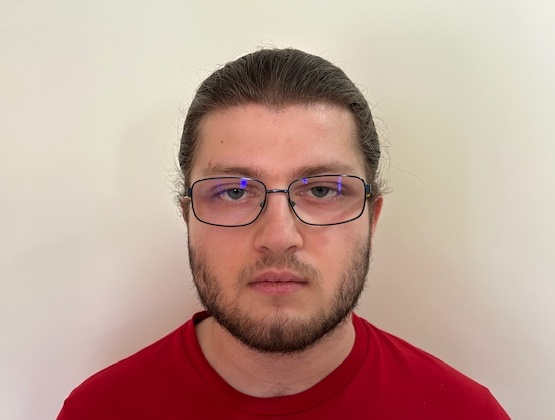

Email: kostfoto2001@gmail.com | Tel: +30-6934826216 | Google Scholar

My name is Konstantinos Fotopoulos, and I am a soon to be Computer Science MSc student at ETH Zurich. After the Master's degree at ETH, I hope to continue my academic journey by pursuing a PhD.
In 2024, I earned my Diploma (an integrated BSc and MEng degree) in Electrical and Computer Engineering from the National Technical University of Athens. For my thesis, supervised by Prof. Petros Maragos, I explored the use of tropical geometry in neural network compression.
After finishing my degreee, I worked as a research collaborator at the Athena Research Center, working again under the supervision of Prof. Maragos. My research focused on the intersection of machine learning, tropical geometry, and mathematical morphology. I investigated the challenges of training morphological neural networks, and worked torwards trainable morholoigcal neural network architectures.
I have participated in several national and international competitions throughout my academic journey. Notable achievements include:
During my undergraduate studies, I served as a lab assistant for three semesters in computer programming courses, gaining valuable teaching and mentoring experience.